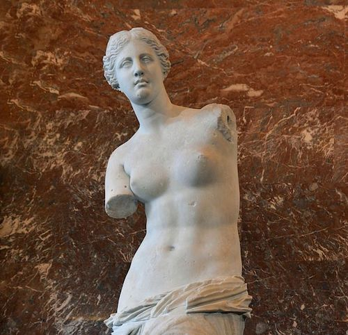

Hi!
I am MichaelYihao Huang, 黄翊皓! So what does that mean exactly? I don't know either and I'm still finding out. For now, I'm a high school student interested in CS, physics, writing, and more recently, math. I'm learning to do research. My past works have focused on algorithm designsI did two years of research in parallel algorithms under the PRIMES program. In 2021, my partner and I developed a parallel algorithm for bi-core decomposition. In 2022, I developed a parallel clustering algorithm for Density-Peaks Clustering and applicative machine learningIn 2021 Summer, I worked at Prof. Scheutz's Human Robot Interaction lab to integrate an object detector AI model into the robotics system. In 2022 Summer, under the Research Science Institute (RSI) program, I worked at Prof. Necib's astrophysics lab to develop novel graph neural network based clustering algorithms for stellar substructure identification. in physics and robotics, but I'm hoping to get into machine learning research with a more mathematical taste in the future. I also enjoy writing about physicsIntuitive Physics and (political) philosophyDaylight Reveries as a way to discharge my thoughts.
Just as Venus de Milo would be incomplete without two slightly incongruous arms, a personal blurb would be deficient without an origin story. Way before doing research, I fiddled with roboticsI did WRO, FLL, FTC, and VEX robotics (no I won't explain the acronyms). I led a robotics team in middle school and again now in high school.. When I got locked away with a computer during the pandemic, I got bored and became a competitive programmerI did USA Computing Olympiad and also some other smaller contests. I attended USACO camp in 2022 Summer. I also co-founded The Andover Computing Open (and also began physics blogging). It was through competitive programming that I was introduced to doing research in parallel algorithm designs. Then, I started doing more research, particularly in AI. By some will of the universeSome say humans have free will. Others, myself included, disagree. We live in a deterministic universe with the only indeterminism introduced by quantum uncertainty. In a way, we are drifting in a windless ocean, subject to only the random flutterings of waves–––the will of the universe. Each decision we make is not an exercise of our free will, but a valuable experience to understand ourselves–––our most intimate ideas and dreams., I came to the realization one day that we live in a very screwed up time with a lot of existential threatsmisaligned/unaligned artificial general intelligence, nuclear annihilation, climate change, e.t.c.. And that was when I began to find interest in (political) philosophy and writing.
- Twitter: @michael_yhuang
- GitHub: michaelyhuang23
- Email: michaelyhuang23(at)gmail(dot)com